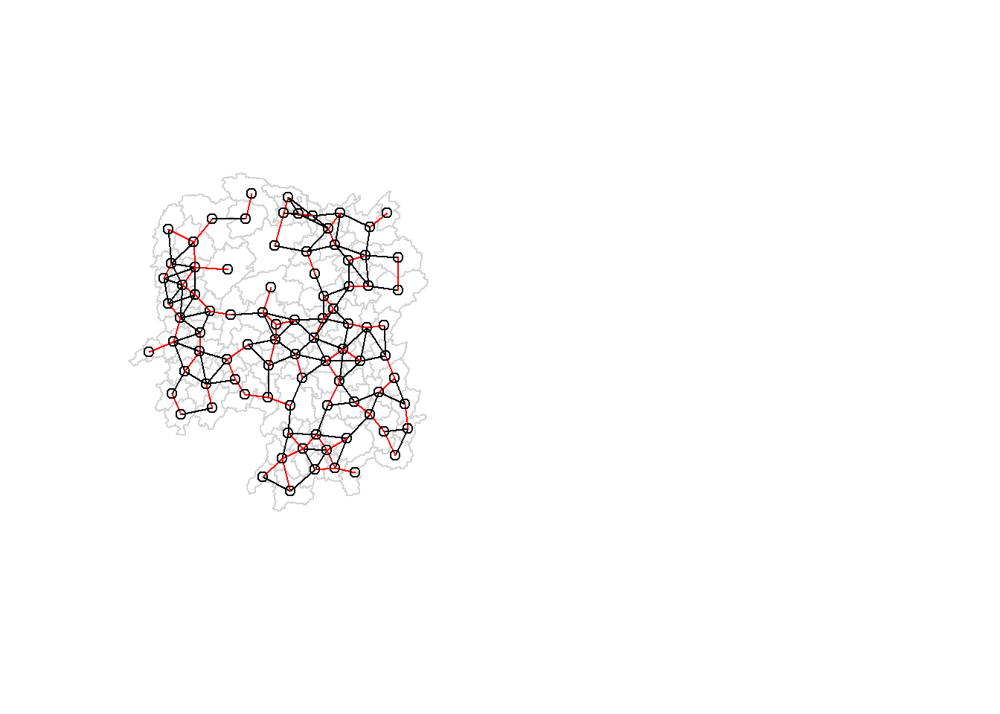
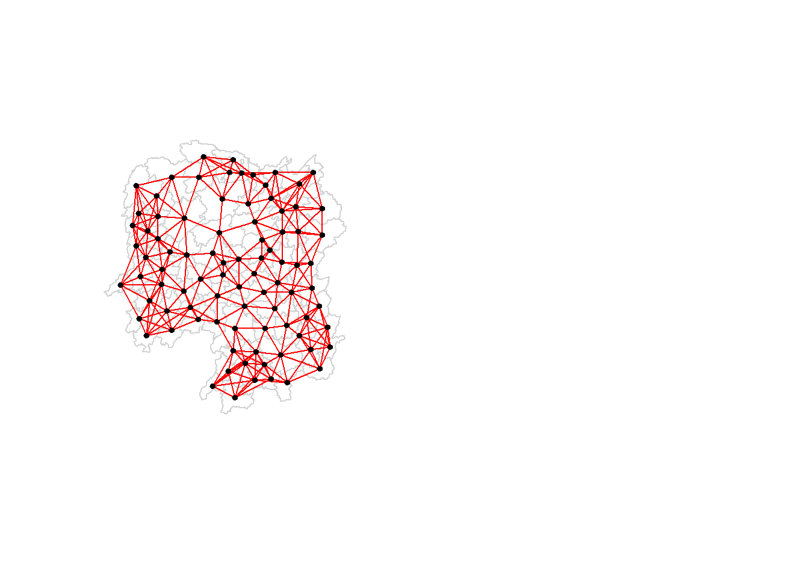

pacman::p_load(sf, spdep, tmap, tidyverse, knitr)Hands-on Exercise 6: Spatial Weights and Applications
Load Packages
Importing Data
Import shapefile into R environment
hunan <- st_read(dsn = "data/geospatial",
layer = "Hunan")Reading layer `Hunan' from data source
`C:\celinderr\IS415-GAA\Hands-on_Ex\Hands-on_Ex06\data\geospatial'
using driver `ESRI Shapefile'
Simple feature collection with 88 features and 7 fields
Geometry type: POLYGON
Dimension: XY
Bounding box: xmin: 108.7831 ymin: 24.6342 xmax: 114.2544 ymax: 30.12812
Geodetic CRS: WGS 84Import csv into R environment
hunan2012 <- read_csv("data/aspatial/Hunan_2012.csv")Rows: 88 Columns: 29
── Column specification ────────────────────────────────────────────────────────
Delimiter: ","
chr (2): County, City
dbl (27): avg_wage, deposite, FAI, Gov_Rev, Gov_Exp, GDP, GDPPC, GIO, Loan, ...
ℹ Use `spec()` to retrieve the full column specification for this data.
ℹ Specify the column types or set `show_col_types = FALSE` to quiet this message.Performing relational join (to update attribute table of hunan’s SpatialPolygonsDataFrame with attributes of hunan2012 dataframe)
left_join of dplyr() package
hunan <- left_join(hunan,hunan2012)%>%
select(1:4, 7, 15)Joining, by = "County"Visualising Regional Development Indicator
Prepare basemap and choropleth map to show distribution of GDPPC 2012
qtm() of tmap package
basemap <- tm_shape(hunan) +
tm_polygons() +
tm_text("NAME_3", size=0.5)
gdppc <- qtm(hunan, "GDPPC")
tmap_arrange(basemap, gdppc, asp=1, ncol=2)
Computing Contiguity Spatial Weights
to compute conginuity weight matrices for study area;
builds neighbour list based on regions with contiguous boundaries;
you can pass a ‘queen’ argument that takes TRUE or FALSE as options
poly2nb() of spdep package
Computing (QUEEN) contiguity based neighbours
wm_q <- poly2nb(hunan, queen=TRUE)
summary(wm_q)Neighbour list object:
Number of regions: 88
Number of nonzero links: 448
Percentage nonzero weights: 5.785124
Average number of links: 5.090909
Link number distribution:
1 2 3 4 5 6 7 8 9 11
2 2 12 16 24 14 11 4 2 1
2 least connected regions:
30 65 with 1 link
1 most connected region:
85 with 11 linksObservation: 88 area units in Hunan, most connected unit has 11 neighbours, 2 area units with only 1 neighbour.
For each polygon in our polygon object, wm_q lists all the neighbouring polygons.
Eg. to see neighbours for the first polygon in the object:
wm_q[[1]][1] 2 3 4 57 85Observation: Polygon 1 has 5 neighbours. Numbers represent the polygon IDs as stored in hunan SpatialPolygonsDataFrame class
to retrieve county name of Polygon ID=1:
hunan$County[1][1] "Anxiang"to reveal county name of 5 neighbours:
hunan$NAME_3[c(2,3,4,57,85)][1] "Hanshou" "Jinshi" "Li" "Nan" "Taoyuan"to retrieve GDPPC of above 5 countries:
nb1 <- wm_q[[1]]
nb1 <- hunan$GDPPC[nb1]
nb1[1] 20981 34592 24473 21311 22879to display the complete weight matrix (str())
str(wm_q)List of 88
$ : int [1:5] 2 3 4 57 85
$ : int [1:5] 1 57 58 78 85
$ : int [1:4] 1 4 5 85
$ : int [1:4] 1 3 5 6
$ : int [1:4] 3 4 6 85
$ : int [1:5] 4 5 69 75 85
$ : int [1:4] 67 71 74 84
$ : int [1:7] 9 46 47 56 78 80 86
$ : int [1:6] 8 66 68 78 84 86
$ : int [1:8] 16 17 19 20 22 70 72 73
$ : int [1:3] 14 17 72
$ : int [1:5] 13 60 61 63 83
$ : int [1:4] 12 15 60 83
$ : int [1:3] 11 15 17
$ : int [1:4] 13 14 17 83
$ : int [1:5] 10 17 22 72 83
$ : int [1:7] 10 11 14 15 16 72 83
$ : int [1:5] 20 22 23 77 83
$ : int [1:6] 10 20 21 73 74 86
$ : int [1:7] 10 18 19 21 22 23 82
$ : int [1:5] 19 20 35 82 86
$ : int [1:5] 10 16 18 20 83
$ : int [1:7] 18 20 38 41 77 79 82
$ : int [1:5] 25 28 31 32 54
$ : int [1:5] 24 28 31 33 81
$ : int [1:4] 27 33 42 81
$ : int [1:3] 26 29 42
$ : int [1:5] 24 25 33 49 54
$ : int [1:3] 27 37 42
$ : int 33
$ : int [1:8] 24 25 32 36 39 40 56 81
$ : int [1:8] 24 31 50 54 55 56 75 85
$ : int [1:5] 25 26 28 30 81
$ : int [1:3] 36 45 80
$ : int [1:6] 21 41 47 80 82 86
$ : int [1:6] 31 34 40 45 56 80
$ : int [1:4] 29 42 43 44
$ : int [1:4] 23 44 77 79
$ : int [1:5] 31 40 42 43 81
$ : int [1:6] 31 36 39 43 45 79
$ : int [1:6] 23 35 45 79 80 82
$ : int [1:7] 26 27 29 37 39 43 81
$ : int [1:6] 37 39 40 42 44 79
$ : int [1:4] 37 38 43 79
$ : int [1:6] 34 36 40 41 79 80
$ : int [1:3] 8 47 86
$ : int [1:5] 8 35 46 80 86
$ : int [1:5] 50 51 52 53 55
$ : int [1:4] 28 51 52 54
$ : int [1:5] 32 48 52 54 55
$ : int [1:3] 48 49 52
$ : int [1:5] 48 49 50 51 54
$ : int [1:3] 48 55 75
$ : int [1:6] 24 28 32 49 50 52
$ : int [1:5] 32 48 50 53 75
$ : int [1:7] 8 31 32 36 78 80 85
$ : int [1:6] 1 2 58 64 76 85
$ : int [1:5] 2 57 68 76 78
$ : int [1:4] 60 61 87 88
$ : int [1:4] 12 13 59 61
$ : int [1:7] 12 59 60 62 63 77 87
$ : int [1:3] 61 77 87
$ : int [1:4] 12 61 77 83
$ : int [1:2] 57 76
$ : int 76
$ : int [1:5] 9 67 68 76 84
$ : int [1:4] 7 66 76 84
$ : int [1:5] 9 58 66 76 78
$ : int [1:3] 6 75 85
$ : int [1:3] 10 72 73
$ : int [1:3] 7 73 74
$ : int [1:5] 10 11 16 17 70
$ : int [1:5] 10 19 70 71 74
$ : int [1:6] 7 19 71 73 84 86
$ : int [1:6] 6 32 53 55 69 85
$ : int [1:7] 57 58 64 65 66 67 68
$ : int [1:7] 18 23 38 61 62 63 83
$ : int [1:7] 2 8 9 56 58 68 85
$ : int [1:7] 23 38 40 41 43 44 45
$ : int [1:8] 8 34 35 36 41 45 47 56
$ : int [1:6] 25 26 31 33 39 42
$ : int [1:5] 20 21 23 35 41
$ : int [1:9] 12 13 15 16 17 18 22 63 77
$ : int [1:6] 7 9 66 67 74 86
$ : int [1:11] 1 2 3 5 6 32 56 57 69 75 ...
$ : int [1:9] 8 9 19 21 35 46 47 74 84
$ : int [1:4] 59 61 62 88
$ : int [1:2] 59 87
- attr(*, "class")= chr "nb"
- attr(*, "region.id")= chr [1:88] "1" "2" "3" "4" ...
- attr(*, "call")= language poly2nb(pl = hunan, queen = TRUE)
- attr(*, "type")= chr "queen"
- attr(*, "sym")= logi TRUECreating (ROOK) contiguity based neighbours
to compute ROOK contiguinity weight matrix
wm_r <- poly2nb(hunan, queen=FALSE)
summary(wm_r)Neighbour list object:
Number of regions: 88
Number of nonzero links: 440
Percentage nonzero weights: 5.681818
Average number of links: 5
Link number distribution:
1 2 3 4 5 6 7 8 9 10
2 2 12 20 21 14 11 3 2 1
2 least connected regions:
30 65 with 1 link
1 most connected region:
85 with 10 linksObservations: 88 area units in Hunan, most connected area unit has 10 neighbours, 2 units with only 1 neighbour
Visualising contiguity weights
A connectivity graph takes a point and displays a line to each neighbouring point.
Now is polygons form, so we will need to get the points in order to make the connectivity graphs.
Most typical method is polygon centroids, calculated in the sf package before moving onto the graphs
Getting latitude and longitude of polygon centroids
- Need points to associate with each polygon before making connectivity graph,
- Need coordinates in a separate data frame for this
- We will use a mapping function – applies a given function to each element of a vector and returns a vector of the same length
Input vector: geometry column of us.bound
Function: st_centroid
map_dbl of purrr package
To get longitude values -> map st_centroid function over geometry column of us.bound and access longitude value through [] and 1. (First value in each centroid is the longitude)
longitude <- map_dbl(hunan$geometry, ~st_centroid(.x)[[1]])Get latitude, the second value per each centroid
latitude <- map_dbl(hunan$geometry, ~st_centroid(.x)[[2]])Use cbind to put latitude and longitude into the same object
coords <- cbind(longitude, latitude)Check first few observations to see if things are formatted correctly
head(coords) longitude latitude
[1,] 112.1531 29.44362
[2,] 112.0372 28.86489
[3,] 111.8917 29.47107
[4,] 111.7031 29.74499
[5,] 111.6138 29.49258
[6,] 111.0341 29.79863Plotting Queen contiguinity based neighbours map
plot(hunan$geometry, border="lightgrey")
plot(wm_q, coords, pch = 19, cex = 0.6, add = TRUE, col= "red")
Plotting Rook contiguinity based neighbours map
plot(hunan$geometry, border="lightgrey")
plot(wm_r, coords, pch = 19, cex = 0.6, add = TRUE, col = "red")
Plotting both Queen and Rook contiguinity based neighbours maps
par(mfrow=c(1,2))
plot(hunan$geometry, border="lightgrey")
plot(wm_q, coords, pch = 19, cex = 0.6, add = TRUE, col= "red", main="Queen Contiguity")
plot(hunan$geometry, border="lightgrey")
plot(wm_r, coords, pch = 19, cex = 0.6, add = TRUE, col = "red", main="Rook Contiguity")
# Computing distance based neighbours
## Learn how to derive distance-based weight matrices using dnearneigh() of spdep package
### This function identifies neighbours of region points by Euclidean distance with a distance band with lower d1= and upper d2= bounds controlled by the bounds= argument.
### If unprojected coordinates are used and either specified in the coordinates object x or with x as a two column matric and longlat=TRUE, great circle distances in km will be calculated assuming WGS84 reference ellipsoid
## Determine cut-off distance
### Firstly, determine upper limit for distance band
#coords <- coordinates(hunan)
k1 <- knn2nb(knearneigh(coords))
k1dists <- unlist(nbdists(k1, coords, longlat = TRUE))
summary(k1dists) Min. 1st Qu. Median Mean 3rd Qu. Max.
24.79 32.57 38.01 39.07 44.52 61.79 #### Summary report shows that largest first nearest neighbour distance is 61.79km, hence, this upper threshold gives certainty that all units will have at least one neighbour
## Computing fixed distance weight matric
### Using dnearneigh
wm_d62 <- dnearneigh(coords, 0, 62, longlat = TRUE)
wm_d62Neighbour list object:
Number of regions: 88
Number of nonzero links: 324
Percentage nonzero weights: 4.183884
Average number of links: 3.681818 ## Using str() to display content of wm_d62 weight matrix
str(wm_d62)List of 88
$ : int [1:5] 3 4 5 57 64
$ : int [1:4] 57 58 78 85
$ : int [1:4] 1 4 5 57
$ : int [1:3] 1 3 5
$ : int [1:4] 1 3 4 85
$ : int 69
$ : int [1:2] 67 84
$ : int [1:4] 9 46 47 78
$ : int [1:4] 8 46 68 84
$ : int [1:4] 16 22 70 72
$ : int [1:3] 14 17 72
$ : int [1:5] 13 60 61 63 83
$ : int [1:4] 12 15 60 83
$ : int [1:2] 11 17
$ : int 13
$ : int [1:4] 10 17 22 83
$ : int [1:3] 11 14 16
$ : int [1:3] 20 22 63
$ : int [1:5] 20 21 73 74 82
$ : int [1:5] 18 19 21 22 82
$ : int [1:6] 19 20 35 74 82 86
$ : int [1:4] 10 16 18 20
$ : int [1:3] 41 77 82
$ : int [1:4] 25 28 31 54
$ : int [1:4] 24 28 33 81
$ : int [1:4] 27 33 42 81
$ : int [1:2] 26 29
$ : int [1:6] 24 25 33 49 52 54
$ : int [1:2] 27 37
$ : int 33
$ : int [1:2] 24 36
$ : int 50
$ : int [1:5] 25 26 28 30 81
$ : int [1:3] 36 45 80
$ : int [1:6] 21 41 46 47 80 82
$ : int [1:5] 31 34 45 56 80
$ : int [1:2] 29 42
$ : int [1:3] 44 77 79
$ : int [1:4] 40 42 43 81
$ : int [1:3] 39 45 79
$ : int [1:5] 23 35 45 79 82
$ : int [1:5] 26 37 39 43 81
$ : int [1:3] 39 42 44
$ : int [1:2] 38 43
$ : int [1:6] 34 36 40 41 79 80
$ : int [1:5] 8 9 35 47 86
$ : int [1:5] 8 35 46 80 86
$ : int [1:5] 50 51 52 53 55
$ : int [1:4] 28 51 52 54
$ : int [1:6] 32 48 51 52 54 55
$ : int [1:4] 48 49 50 52
$ : int [1:6] 28 48 49 50 51 54
$ : int [1:2] 48 55
$ : int [1:5] 24 28 49 50 52
$ : int [1:4] 48 50 53 75
$ : int 36
$ : int [1:5] 1 2 3 58 64
$ : int [1:5] 2 57 64 66 68
$ : int [1:3] 60 87 88
$ : int [1:4] 12 13 59 61
$ : int [1:5] 12 60 62 63 87
$ : int [1:4] 61 63 77 87
$ : int [1:5] 12 18 61 62 83
$ : int [1:4] 1 57 58 76
$ : int 76
$ : int [1:5] 58 67 68 76 84
$ : int [1:2] 7 66
$ : int [1:4] 9 58 66 84
$ : int [1:2] 6 75
$ : int [1:3] 10 72 73
$ : int [1:2] 73 74
$ : int [1:3] 10 11 70
$ : int [1:4] 19 70 71 74
$ : int [1:5] 19 21 71 73 86
$ : int [1:2] 55 69
$ : int [1:3] 64 65 66
$ : int [1:3] 23 38 62
$ : int [1:2] 2 8
$ : int [1:4] 38 40 41 45
$ : int [1:5] 34 35 36 45 47
$ : int [1:5] 25 26 33 39 42
$ : int [1:6] 19 20 21 23 35 41
$ : int [1:4] 12 13 16 63
$ : int [1:4] 7 9 66 68
$ : int [1:2] 2 5
$ : int [1:4] 21 46 47 74
$ : int [1:4] 59 61 62 88
$ : int [1:2] 59 87
- attr(*, "class")= chr "nb"
- attr(*, "region.id")= chr [1:88] "1" "2" "3" "4" ...
- attr(*, "call")= language dnearneigh(x = coords, d1 = 0, d2 = 62, longlat = TRUE)
- attr(*, "dnn")= num [1:2] 0 62
- attr(*, "bounds")= chr [1:2] "GE" "LE"
- attr(*, "nbtype")= chr "distance"
- attr(*, "sym")= logi TRUE## Using table() and card() of spdep to display structure of weight matrix
table(hunan$County, card(wm_d62))
1 2 3 4 5 6
Anhua 1 0 0 0 0 0
Anren 0 0 0 1 0 0
Anxiang 0 0 0 0 1 0
Baojing 0 0 0 0 1 0
Chaling 0 0 1 0 0 0
Changning 0 0 1 0 0 0
Changsha 0 0 0 1 0 0
Chengbu 0 1 0 0 0 0
Chenxi 0 0 0 1 0 0
Cili 0 1 0 0 0 0
Dao 0 0 0 1 0 0
Dongan 0 0 1 0 0 0
Dongkou 0 0 0 1 0 0
Fenghuang 0 0 0 1 0 0
Guidong 0 0 1 0 0 0
Guiyang 0 0 0 1 0 0
Guzhang 0 0 0 0 0 1
Hanshou 0 0 0 1 0 0
Hengdong 0 0 0 0 1 0
Hengnan 0 0 0 0 1 0
Hengshan 0 0 0 0 0 1
Hengyang 0 0 0 0 0 1
Hongjiang 0 0 0 0 1 0
Huarong 0 0 0 1 0 0
Huayuan 0 0 0 1 0 0
Huitong 0 0 0 1 0 0
Jiahe 0 0 0 0 1 0
Jianghua 0 0 1 0 0 0
Jiangyong 0 1 0 0 0 0
Jingzhou 0 1 0 0 0 0
Jinshi 0 0 0 1 0 0
Jishou 0 0 0 0 0 1
Lanshan 0 0 0 1 0 0
Leiyang 0 0 0 1 0 0
Lengshuijiang 0 0 1 0 0 0
Li 0 0 1 0 0 0
Lianyuan 0 0 0 0 1 0
Liling 0 1 0 0 0 0
Linli 0 0 0 1 0 0
Linwu 0 0 0 1 0 0
Linxiang 1 0 0 0 0 0
Liuyang 0 1 0 0 0 0
Longhui 0 0 1 0 0 0
Longshan 0 1 0 0 0 0
Luxi 0 0 0 0 1 0
Mayang 0 0 0 0 0 1
Miluo 0 0 0 0 1 0
Nan 0 0 0 0 1 0
Ningxiang 0 0 0 1 0 0
Ningyuan 0 0 0 0 1 0
Pingjiang 0 1 0 0 0 0
Qidong 0 0 1 0 0 0
Qiyang 0 0 1 0 0 0
Rucheng 0 1 0 0 0 0
Sangzhi 0 1 0 0 0 0
Shaodong 0 0 0 0 1 0
Shaoshan 0 0 0 0 1 0
Shaoyang 0 0 0 1 0 0
Shimen 1 0 0 0 0 0
Shuangfeng 0 0 0 0 0 1
Shuangpai 0 0 0 1 0 0
Suining 0 0 0 0 1 0
Taojiang 0 1 0 0 0 0
Taoyuan 0 1 0 0 0 0
Tongdao 0 1 0 0 0 0
Wangcheng 0 0 0 1 0 0
Wugang 0 0 1 0 0 0
Xiangtan 0 0 0 1 0 0
Xiangxiang 0 0 0 0 1 0
Xiangyin 0 0 0 1 0 0
Xinhua 0 0 0 0 1 0
Xinhuang 1 0 0 0 0 0
Xinning 0 1 0 0 0 0
Xinshao 0 0 0 0 0 1
Xintian 0 0 0 0 1 0
Xupu 0 1 0 0 0 0
Yanling 0 0 1 0 0 0
Yizhang 1 0 0 0 0 0
Yongshun 0 0 0 1 0 0
Yongxing 0 0 0 1 0 0
You 0 0 0 1 0 0
Yuanjiang 0 0 0 0 1 0
Yuanling 1 0 0 0 0 0
Yueyang 0 0 1 0 0 0
Zhijiang 0 0 0 0 1 0
Zhongfang 0 0 0 1 0 0
Zhuzhou 0 0 0 0 1 0
Zixing 0 0 1 0 0 0n_comp <- n.comp.nb(wm_d62)
n_comp$nc[1] 1table(n_comp$comp.id)
1
88 ### Plotting fixed distance weight matric
plot(hunan$geometry, border="lightgrey")
plot(wm_d62, coords, add=TRUE)
plot(k1, coords, add=TRUE, col="red", length=0.08)
#### Note: Red lines show links of 1st neighbours and black lines show links of neighbours within the cut-off distance of 62km
#### Alternatively, can plot both of them next to each other
par(mfrow=c(1,2))
plot(hunan$geometry, border="lightgrey")
plot(k1, coords, add=TRUE, col="red", length=0.08, main="1st nearest neighbours")
plot(hunan$geometry, border="lightgrey")
plot(wm_d62, coords, add=TRUE, pch = 19, cex = 0.6, main="Distance link")
### Computing adaptive distance weight matrix
#### One of the characteristics of fixed distance weight matrix: more densely settled areas (usually the urban areas) tend to have more neighbours and less densely settled areas (usually the rural areas) tend to have lesser neighbours
#### Possible to control the number of neighbours directly using k-nearest neighbours, either accepting asymmetric neighbours or imposing symmetry
knn6 <- knn2nb(knearneigh(coords, k=6))
knn6Neighbour list object:
Number of regions: 88
Number of nonzero links: 528
Percentage nonzero weights: 6.818182
Average number of links: 6
Non-symmetric neighbours list### Display content by using str()
str(knn6)List of 88
$ : int [1:6] 2 3 4 5 57 64
$ : int [1:6] 1 3 57 58 78 85
$ : int [1:6] 1 2 4 5 57 85
$ : int [1:6] 1 3 5 6 69 85
$ : int [1:6] 1 3 4 6 69 85
$ : int [1:6] 3 4 5 69 75 85
$ : int [1:6] 9 66 67 71 74 84
$ : int [1:6] 9 46 47 78 80 86
$ : int [1:6] 8 46 66 68 84 86
$ : int [1:6] 16 19 22 70 72 73
$ : int [1:6] 10 14 16 17 70 72
$ : int [1:6] 13 15 60 61 63 83
$ : int [1:6] 12 15 60 61 63 83
$ : int [1:6] 11 15 16 17 72 83
$ : int [1:6] 12 13 14 17 60 83
$ : int [1:6] 10 11 17 22 72 83
$ : int [1:6] 10 11 14 16 72 83
$ : int [1:6] 20 22 23 63 77 83
$ : int [1:6] 10 20 21 73 74 82
$ : int [1:6] 18 19 21 22 23 82
$ : int [1:6] 19 20 35 74 82 86
$ : int [1:6] 10 16 18 19 20 83
$ : int [1:6] 18 20 41 77 79 82
$ : int [1:6] 25 28 31 52 54 81
$ : int [1:6] 24 28 31 33 54 81
$ : int [1:6] 25 27 29 33 42 81
$ : int [1:6] 26 29 30 37 42 81
$ : int [1:6] 24 25 33 49 52 54
$ : int [1:6] 26 27 37 42 43 81
$ : int [1:6] 26 27 28 33 49 81
$ : int [1:6] 24 25 36 39 40 54
$ : int [1:6] 24 31 50 54 55 56
$ : int [1:6] 25 26 28 30 49 81
$ : int [1:6] 36 40 41 45 56 80
$ : int [1:6] 21 41 46 47 80 82
$ : int [1:6] 31 34 40 45 56 80
$ : int [1:6] 26 27 29 42 43 44
$ : int [1:6] 23 43 44 62 77 79
$ : int [1:6] 25 40 42 43 44 81
$ : int [1:6] 31 36 39 43 45 79
$ : int [1:6] 23 35 45 79 80 82
$ : int [1:6] 26 27 37 39 43 81
$ : int [1:6] 37 39 40 42 44 79
$ : int [1:6] 37 38 39 42 43 79
$ : int [1:6] 34 36 40 41 79 80
$ : int [1:6] 8 9 35 47 78 86
$ : int [1:6] 8 21 35 46 80 86
$ : int [1:6] 49 50 51 52 53 55
$ : int [1:6] 28 33 48 51 52 54
$ : int [1:6] 32 48 51 52 54 55
$ : int [1:6] 28 48 49 50 52 54
$ : int [1:6] 28 48 49 50 51 54
$ : int [1:6] 48 50 51 52 55 75
$ : int [1:6] 24 28 49 50 51 52
$ : int [1:6] 32 48 50 52 53 75
$ : int [1:6] 32 34 36 78 80 85
$ : int [1:6] 1 2 3 58 64 68
$ : int [1:6] 2 57 64 66 68 78
$ : int [1:6] 12 13 60 61 87 88
$ : int [1:6] 12 13 59 61 63 87
$ : int [1:6] 12 13 60 62 63 87
$ : int [1:6] 12 38 61 63 77 87
$ : int [1:6] 12 18 60 61 62 83
$ : int [1:6] 1 3 57 58 68 76
$ : int [1:6] 58 64 66 67 68 76
$ : int [1:6] 9 58 67 68 76 84
$ : int [1:6] 7 65 66 68 76 84
$ : int [1:6] 9 57 58 66 78 84
$ : int [1:6] 4 5 6 32 75 85
$ : int [1:6] 10 16 19 22 72 73
$ : int [1:6] 7 19 73 74 84 86
$ : int [1:6] 10 11 14 16 17 70
$ : int [1:6] 10 19 21 70 71 74
$ : int [1:6] 19 21 71 73 84 86
$ : int [1:6] 6 32 50 53 55 69
$ : int [1:6] 58 64 65 66 67 68
$ : int [1:6] 18 23 38 61 62 63
$ : int [1:6] 2 8 9 46 58 68
$ : int [1:6] 38 40 41 43 44 45
$ : int [1:6] 34 35 36 41 45 47
$ : int [1:6] 25 26 28 33 39 42
$ : int [1:6] 19 20 21 23 35 41
$ : int [1:6] 12 13 15 16 22 63
$ : int [1:6] 7 9 66 68 71 74
$ : int [1:6] 2 3 4 5 56 69
$ : int [1:6] 8 9 21 46 47 74
$ : int [1:6] 59 60 61 62 63 88
$ : int [1:6] 59 60 61 62 63 87
- attr(*, "region.id")= chr [1:88] "1" "2" "3" "4" ...
- attr(*, "call")= language knearneigh(x = coords, k = 6)
- attr(*, "sym")= logi FALSE
- attr(*, "type")= chr "knn"
- attr(*, "knn-k")= num 6
- attr(*, "class")= chr "nb"### Plotting distance based neighbours
plot(hunan$geometry, border="lightgrey")
plot(knn6, coords, pch = 19, cex = 0.6, add = TRUE, col = "red")
# Weights based on IDW
## Using Inversed Distnce method
### Firstly, compute distances between areas by using nbdists() of spdep
dist <- nbdists(wm_q, coords, longlat = TRUE)
ids <- lapply(dist, function(x) 1/(x))
ids[[1]]
[1] 0.01535405 0.03916350 0.01820896 0.02807922 0.01145113
[[2]]
[1] 0.01535405 0.01764308 0.01925924 0.02323898 0.01719350
[[3]]
[1] 0.03916350 0.02822040 0.03695795 0.01395765
[[4]]
[1] 0.01820896 0.02822040 0.03414741 0.01539065
[[5]]
[1] 0.03695795 0.03414741 0.01524598 0.01618354
[[6]]
[1] 0.015390649 0.015245977 0.021748129 0.011883901 0.009810297
[[7]]
[1] 0.01708612 0.01473997 0.01150924 0.01872915
[[8]]
[1] 0.02022144 0.03453056 0.02529256 0.01036340 0.02284457 0.01500600 0.01515314
[[9]]
[1] 0.02022144 0.01574888 0.02109502 0.01508028 0.02902705 0.01502980
[[10]]
[1] 0.02281552 0.01387777 0.01538326 0.01346650 0.02100510 0.02631658 0.01874863
[8] 0.01500046
[[11]]
[1] 0.01882869 0.02243492 0.02247473
[[12]]
[1] 0.02779227 0.02419652 0.02333385 0.02986130 0.02335429
[[13]]
[1] 0.02779227 0.02650020 0.02670323 0.01714243
[[14]]
[1] 0.01882869 0.01233868 0.02098555
[[15]]
[1] 0.02650020 0.01233868 0.01096284 0.01562226
[[16]]
[1] 0.02281552 0.02466962 0.02765018 0.01476814 0.01671430
[[17]]
[1] 0.01387777 0.02243492 0.02098555 0.01096284 0.02466962 0.01593341 0.01437996
[[18]]
[1] 0.02039779 0.02032767 0.01481665 0.01473691 0.01459380
[[19]]
[1] 0.01538326 0.01926323 0.02668415 0.02140253 0.01613589 0.01412874
[[20]]
[1] 0.01346650 0.02039779 0.01926323 0.01723025 0.02153130 0.01469240 0.02327034
[[21]]
[1] 0.02668415 0.01723025 0.01766299 0.02644986 0.02163800
[[22]]
[1] 0.02100510 0.02765018 0.02032767 0.02153130 0.01489296
[[23]]
[1] 0.01481665 0.01469240 0.01401432 0.02246233 0.01880425 0.01530458 0.01849605
[[24]]
[1] 0.02354598 0.01837201 0.02607264 0.01220154 0.02514180
[[25]]
[1] 0.02354598 0.02188032 0.01577283 0.01949232 0.02947957
[[26]]
[1] 0.02155798 0.01745522 0.02212108 0.02220532
[[27]]
[1] 0.02155798 0.02490625 0.01562326
[[28]]
[1] 0.01837201 0.02188032 0.02229549 0.03076171 0.02039506
[[29]]
[1] 0.02490625 0.01686587 0.01395022
[[30]]
[1] 0.02090587
[[31]]
[1] 0.02607264 0.01577283 0.01219005 0.01724850 0.01229012 0.01609781 0.01139438
[8] 0.01150130
[[32]]
[1] 0.01220154 0.01219005 0.01712515 0.01340413 0.01280928 0.01198216 0.01053374
[8] 0.01065655
[[33]]
[1] 0.01949232 0.01745522 0.02229549 0.02090587 0.01979045
[[34]]
[1] 0.03113041 0.03589551 0.02882915
[[35]]
[1] 0.01766299 0.02185795 0.02616766 0.02111721 0.02108253 0.01509020
[[36]]
[1] 0.01724850 0.03113041 0.01571707 0.01860991 0.02073549 0.01680129
[[37]]
[1] 0.01686587 0.02234793 0.01510990 0.01550676
[[38]]
[1] 0.01401432 0.02407426 0.02276151 0.01719415
[[39]]
[1] 0.01229012 0.02172543 0.01711924 0.02629732 0.01896385
[[40]]
[1] 0.01609781 0.01571707 0.02172543 0.01506473 0.01987922 0.01894207
[[41]]
[1] 0.02246233 0.02185795 0.02205991 0.01912542 0.01601083 0.01742892
[[42]]
[1] 0.02212108 0.01562326 0.01395022 0.02234793 0.01711924 0.01836831 0.01683518
[[43]]
[1] 0.01510990 0.02629732 0.01506473 0.01836831 0.03112027 0.01530782
[[44]]
[1] 0.01550676 0.02407426 0.03112027 0.01486508
[[45]]
[1] 0.03589551 0.01860991 0.01987922 0.02205991 0.02107101 0.01982700
[[46]]
[1] 0.03453056 0.04033752 0.02689769
[[47]]
[1] 0.02529256 0.02616766 0.04033752 0.01949145 0.02181458
[[48]]
[1] 0.02313819 0.03370576 0.02289485 0.01630057 0.01818085
[[49]]
[1] 0.03076171 0.02138091 0.02394529 0.01990000
[[50]]
[1] 0.01712515 0.02313819 0.02551427 0.02051530 0.02187179
[[51]]
[1] 0.03370576 0.02138091 0.02873854
[[52]]
[1] 0.02289485 0.02394529 0.02551427 0.02873854 0.03516672
[[53]]
[1] 0.01630057 0.01979945 0.01253977
[[54]]
[1] 0.02514180 0.02039506 0.01340413 0.01990000 0.02051530 0.03516672
[[55]]
[1] 0.01280928 0.01818085 0.02187179 0.01979945 0.01882298
[[56]]
[1] 0.01036340 0.01139438 0.01198216 0.02073549 0.01214479 0.01362855 0.01341697
[[57]]
[1] 0.028079221 0.017643082 0.031423501 0.029114131 0.013520292 0.009903702
[[58]]
[1] 0.01925924 0.03142350 0.02722997 0.01434859 0.01567192
[[59]]
[1] 0.01696711 0.01265572 0.01667105 0.01785036
[[60]]
[1] 0.02419652 0.02670323 0.01696711 0.02343040
[[61]]
[1] 0.02333385 0.01265572 0.02343040 0.02514093 0.02790764 0.01219751 0.02362452
[[62]]
[1] 0.02514093 0.02002219 0.02110260
[[63]]
[1] 0.02986130 0.02790764 0.01407043 0.01805987
[[64]]
[1] 0.02911413 0.01689892
[[65]]
[1] 0.02471705
[[66]]
[1] 0.01574888 0.01726461 0.03068853 0.01954805 0.01810569
[[67]]
[1] 0.01708612 0.01726461 0.01349843 0.01361172
[[68]]
[1] 0.02109502 0.02722997 0.03068853 0.01406357 0.01546511
[[69]]
[1] 0.02174813 0.01645838 0.01419926
[[70]]
[1] 0.02631658 0.01963168 0.02278487
[[71]]
[1] 0.01473997 0.01838483 0.03197403
[[72]]
[1] 0.01874863 0.02247473 0.01476814 0.01593341 0.01963168
[[73]]
[1] 0.01500046 0.02140253 0.02278487 0.01838483 0.01652709
[[74]]
[1] 0.01150924 0.01613589 0.03197403 0.01652709 0.01342099 0.02864567
[[75]]
[1] 0.011883901 0.010533736 0.012539774 0.018822977 0.016458383 0.008217581
[[76]]
[1] 0.01352029 0.01434859 0.01689892 0.02471705 0.01954805 0.01349843 0.01406357
[[77]]
[1] 0.014736909 0.018804247 0.022761507 0.012197506 0.020022195 0.014070428
[7] 0.008440896
[[78]]
[1] 0.02323898 0.02284457 0.01508028 0.01214479 0.01567192 0.01546511 0.01140779
[[79]]
[1] 0.01530458 0.01719415 0.01894207 0.01912542 0.01530782 0.01486508 0.02107101
[[80]]
[1] 0.01500600 0.02882915 0.02111721 0.01680129 0.01601083 0.01982700 0.01949145
[8] 0.01362855
[[81]]
[1] 0.02947957 0.02220532 0.01150130 0.01979045 0.01896385 0.01683518
[[82]]
[1] 0.02327034 0.02644986 0.01849605 0.02108253 0.01742892
[[83]]
[1] 0.023354289 0.017142433 0.015622258 0.016714303 0.014379961 0.014593799
[7] 0.014892965 0.018059871 0.008440896
[[84]]
[1] 0.01872915 0.02902705 0.01810569 0.01361172 0.01342099 0.01297994
[[85]]
[1] 0.011451133 0.017193502 0.013957649 0.016183544 0.009810297 0.010656545
[7] 0.013416965 0.009903702 0.014199260 0.008217581 0.011407794
[[86]]
[1] 0.01515314 0.01502980 0.01412874 0.02163800 0.01509020 0.02689769 0.02181458
[8] 0.02864567 0.01297994
[[87]]
[1] 0.01667105 0.02362452 0.02110260 0.02058034
[[88]]
[1] 0.01785036 0.02058034## Row-standardised weights matrix
### Next, assign weights to each neighbouring polygon
### Each of them will be assigned equal weight (style="W"), accomplished by assigning the fraction 1/(#of neighbours) to each neighbouring county then summing the weight4ed income values.
### Most intuitive but one drawback is that polygons along the edges of the study area will base their lagged values on fewer polygons thus potentially over- or under-estimating the true nature of the spatial autocorrelation in the data
rswm_q <- nb2listw(wm_q, style="W", zero.policy = TRUE)
rswm_qCharacteristics of weights list object:
Neighbour list object:
Number of regions: 88
Number of nonzero links: 448
Percentage nonzero weights: 5.785124
Average number of links: 5.090909
Weights style: W
Weights constants summary:
n nn S0 S1 S2
W 88 7744 88 37.86334 365.9147#### zero.policy=TRUE option allows for lists of non-neighbours
#### Note: should be used with caution since the user may not be aware of missing neighbours in their dataset. However, a zero.policy of FALSE would return an error.
### To see weight of first polygon's eight neighbours type
rswm_q$weights[10][[1]]
[1] 0.125 0.125 0.125 0.125 0.125 0.125 0.125 0.125